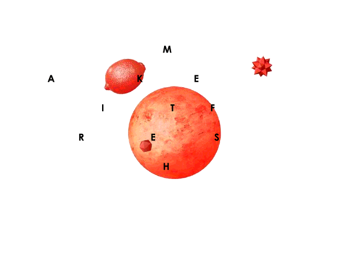
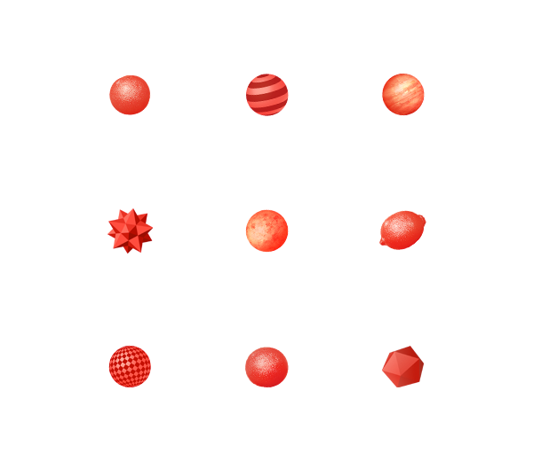
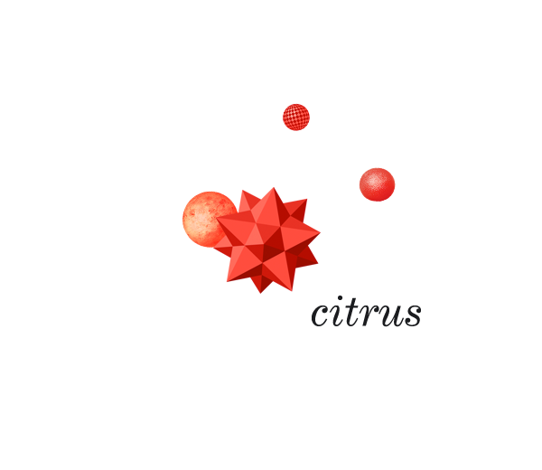
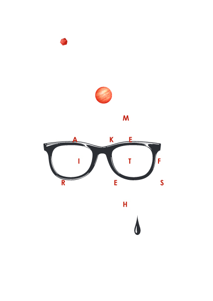
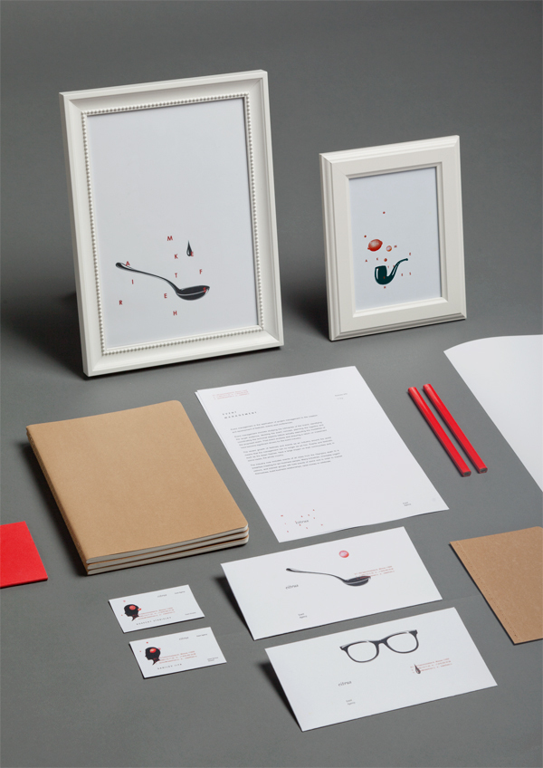
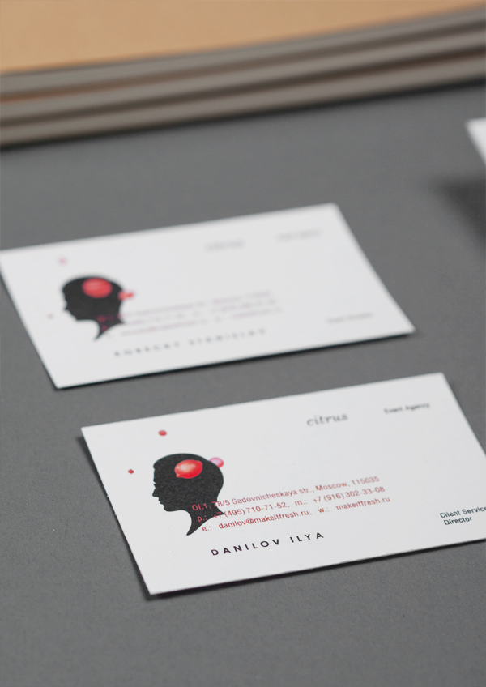

Citrus - Make It Fresh
Created with a pallet of illustrations and graphics, Moscow event agency Citrus’ new dynamic identity system comes across as both fresh and playful. Created by Roma Erohnovich.
The only critique I have with the animated version is that the tweening could use a bit of love.